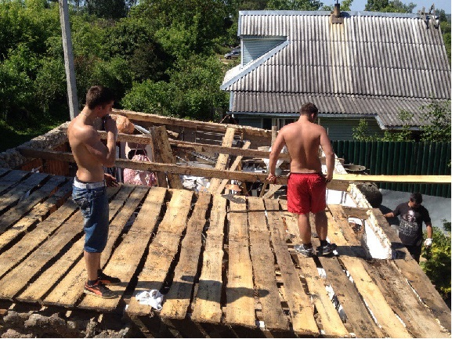
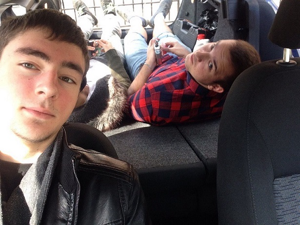
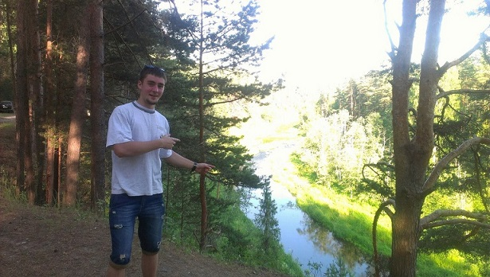
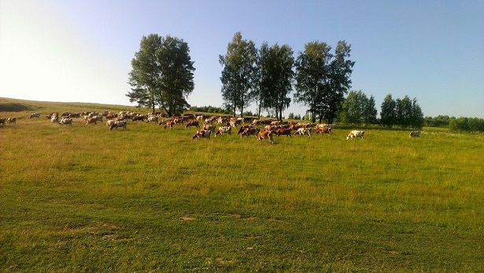

| Как я провел лето | |
|
Лето - одно из лучших сезонов. Характеризуется наиболее высокой температурой окружающей среды. Это время отпусков и каникул. Кто-то проводит время на даче, кто-то улетает на "юг", кого-то более привлекает домашний отдых в компании телевизора и еды) |
|
|  |
В июне я помогал другу перестривать крышу гаража на даче.. Неплохой оказался. Где-то 8 на 4 метра. Находять под палящим солнцем с 9 утра до 8 вечера, приобрел неплохой загар) |
|  |
В те дни, когда жара не давала нам покоя, мы отдыхали) К примеру иммитировали сквозняк в машине и спасались от солнца. |
|   |
Так же немного попутешествовали по простором России. |
|
В конце лета спасал этого парня от запоя. Нелегкое дело, скажу вам) |
|